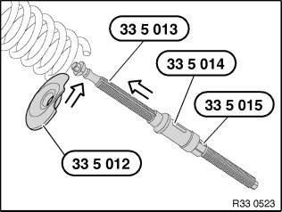
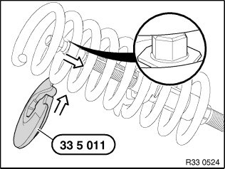
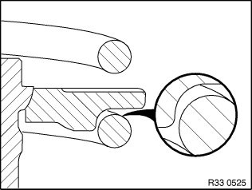
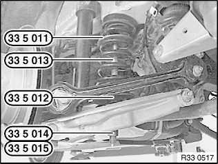
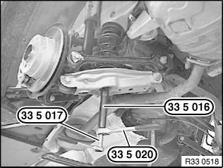
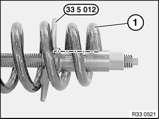
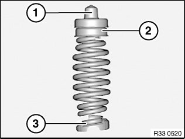
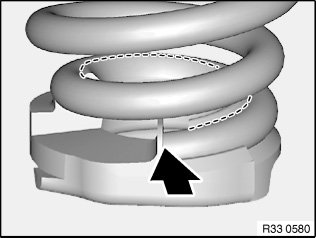

33 53 000 Removing and Installing / Replacing Rear Left or Right Coil Spring
33 53 000 Removing and installing / replacing rear left or right coil springSpecial tools required:
Important!
Both coil springs on the relevant axle must be replaced in the event of corrosion breakage.
The spring pads at the top and bottom must also be renewed when replacing the coil springs.
Avoid damaging the coil spring coating.
Note:
The coil spring is allocated in the Electronic Parts Catalogue (EPC) under the item "Spring table" after the vehicle identification number has been entered and the optional equipments of the car have been selected.
Warning!
Before using the special tool 33 5 010 take care to read through the Owner's Handbook!
All the safety information and instructions contained in the Owner's Handbook must be strictly observed!
Failure to observe these safety precautions and instructions increases the risk of serious physical injury, damage to your health and damage to property and equipment!
Important!
1. Prior to each use, check the special tools for defects, modifications and operational reliability.
2. Damaged/modified special tools must not be used!
3. No changes or modifications may be made to the special tools!
4. These special tools are intended solely for the purpose of tightening and relieving cylindrical and tapered suspension springs.
5. Keep special tools dry, clean and (down to the spindle) free from grease.
6. Impact screwdrivers are prohibited!
7. Do not compress coil spring to full extent.
Necessary preliminary work:
^ Remove rear wheel.

Removal:
Insert lower spring cup 33 5 012 centrally into coil spring and turn to lowest winding.
Guide spindle 33 5 013, 33 5 014, 33 5 015 from below through the camber link and the lower spring cup 33 5 012.

Insert top spring cup 33 5 011 sideways into coil spring and turn to the uppermost winding.
Important!
Make sure spindle (hexagonal) is correctly seated in upper spring cup 33 5 011!
Pull spindle 33 5 013 down.

Warning!
Danger of injury!
Make sure coil spring is correctly positioned in spring cups.

Important!
Center special tools 33 5 011, 33 5 012, 33 5 013, 33 5 014, 33 5 015 to achieve the greatest possible contact surface with the coil spring.
Check installed position of the special tool 33 5 011, 33 5 012 and 33 5 013, 33 5 014, 33 5 015, and correct as needed.

Tighten coil spring using special tools 33 5 016 and 33 5 020, gripping the spindle of the spring tensioner with special tool 33 5 017.
Remove coil spring upwards.

If necessary, relieve tension on coil spring.
Important!
Replacement only:
Bottom end of coil spring (1) must be flush with opening of spring cup 33 5 012 (see dotted-dashed line)!

Installation:
Check spring pads (2, 3) for damage.
Remove spring cup (1) and position with upper spring pad (2) on coil spring.
Note:
Upper spring pad (2) must come into contact with end of coil spring.
Equipment specification with bad-road package: Install adapter as well.

Important!
Observe the following when installing and relieving tension on coil spring:
- Lower spring pad must be positively seated in the designated receptacle in the camber arm
Note: Otherwise there is a risk of the coil spring jumping out sideways.
- Lower spring pad must come into contact with end of coil spring (see arrow)
- Lower spring pad must rest flush on last coil (see broken line)

Align coil spring by way of spring cup to opening in side member and relieve tension.
Remove special tools 33 5 011, 33 5 012 and 33 5 013, 33 5 014, 33 5 015.
After installation:
^ Check headlight adjustment, correct if necessary.